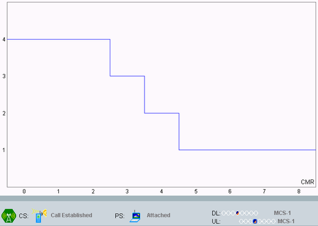

The CMR values recorded for each measurement step are shown in the CMR performance measurement tab.
After the measurement is started, the R&S CMW waits for a valid starting point, which can be one of the frames numbered 4, 13, or 21 of each TDMA 26-multiframe. When the starting point is reached, the R&S CMW changes its TCH output power to the target level and starts recording the received CMRs.

The first value shows the initial CMR. The next entries display the received CMRs, which the R&S CMW receives in regular 40 ms intervals mapped to the x-axis. The measurement is successful if there is a new CMR displayed within the first 5 entries, which confirms that the MS requested a new CMR within 200 ms.
After the measurement is finished, the target level from the measurement is automatically set as the new used TS TCH initial power level. This way, the next measurement can be set up by simply entering a new target level.
The CMR performance measurement is a single shot measurement.